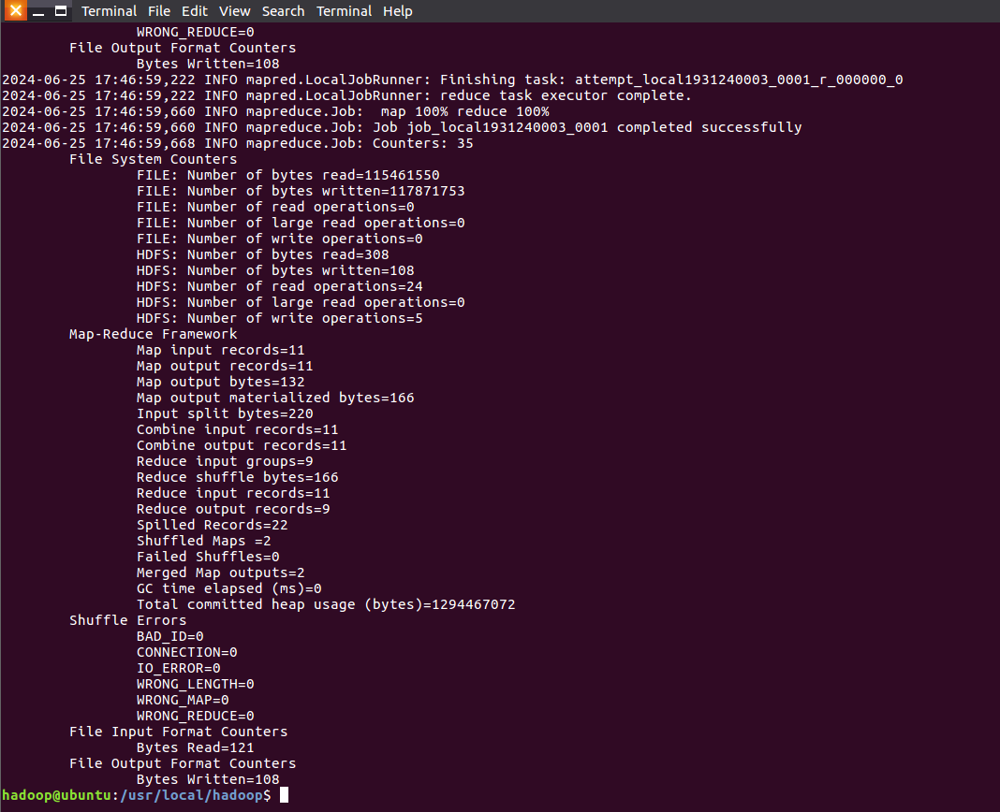
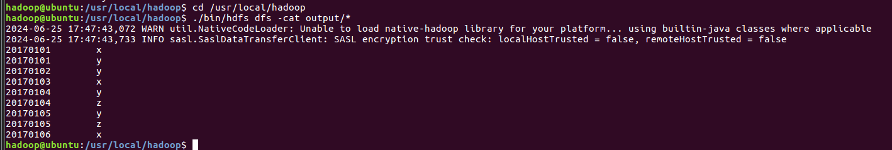
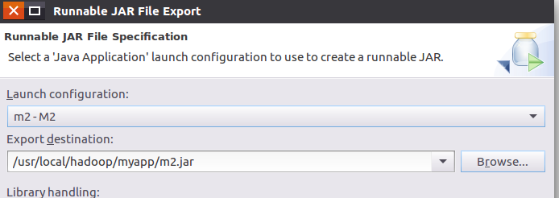
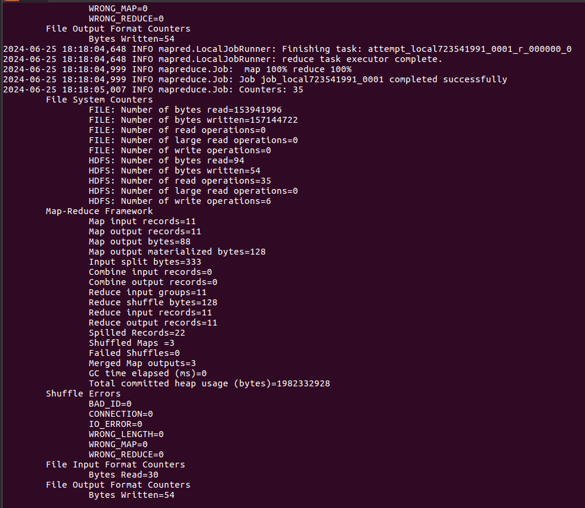
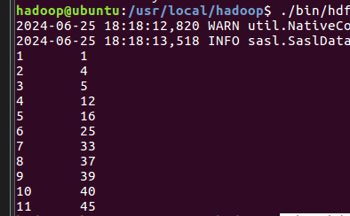

MapReduce
1.编程实现文件合并和去重操作
先直接启动hadoop
cd /usr/local/hadoop
./sbin/start-dfs.sh
接下来新建两个待处理的文件
注意:vim需要先输入i再粘贴文字,之后输入:wq来保存并退出,输入q!强制退出
注意:vim需要先输入i再粘贴文字,之后输入:wq来保存并退出,输入q!强制退出
注意:vim需要先输入i再粘贴文字,之后输入:wq来保存并退出,输入q!强制退出
注意:vim需要先输入i再粘贴文字,之后输入:wq来保存并退出,输入q!强制退出
注意:vim需要先输入i再粘贴文字,之后输入:wq来保存并退出,输入q!强制退出
注意:vim需要先输入i再粘贴文字,之后输入:wq来保存并退出,输入q!强制退出
注意:vim需要先输入i再粘贴文字,之后输入:wq来保存并退出,输入q!强制退出
注意:vim需要先输入i再粘贴文字,之后输入:wq来保存并退出,输入q!强制退出
注意:vim需要先输入i再粘贴文字,之后输入:wq来保存并退出,输入q!强制退出
注意:vim需要先输入i再粘贴文字,之后输入:wq来保存并退出,输入q!强制退出
注意:vim需要先输入i再粘贴文字,之后输入:wq来保存并退出,输入q!强制退出
注意:vim需要先输入i再粘贴文字,之后输入:wq来保存并退出,输入q!强制退出
注意:vim需要先输入i再粘贴文字,之后输入:wq来保存并退出,输入q!强制退出
注意:vim需要先输入i再粘贴文字,之后输入:wq来保存并退出,输入q!强制退出
注意:vim需要先输入i再粘贴文字,之后输入:wq来保存并退出,输入q!强制退出
注意:vim需要先输入i再粘贴文字,之后输入:wq来保存并退出,输入q!强制退出
vim A.txt
20170101 x
20170102 y
20170103 x
20170104 y
20170105 z
20170106 x
vim B.txt
20170101 y
20170102 y
20170103 x
20170104 z
20170105 y
删除之前的input和output文件夹
cd /usr/local/hadoop
./bin/hdfs dfs -rm -r input
./bin/hdfs dfs -rm -r output
删除hadoop中的output,也许没有,没有就不用管
cd /usr/local/hadoop
./bin/hdfs dfs -rm -r /user/hadoop/output
再重新创建一个文件夹
cd /usr/local/hadoop
./bin/hdfs dfs -mkdir input
上传刚才创建的两个文件到hadoop里面
cd /usr/local/hadoop
./bin/hdfs dfs -put ./A.txt input
./bin/hdfs dfs -put ./B.txt input
创建一个装代码的文件夹
cd /usr/local/hadoop
mkdir myapp
这里如果显示已经有了就不用管
接下来打开eclipse
cd /usr/local/eclipse
./eclipse
创建文件并按照视频里面命名
创建文件并按照视频里面命名
创建文件并按照视频里面命名
创建文件并按照视频里面命名
创建文件并按照视频里面命名
创建文件并按照视频里面命名
创建文件并按照视频里面命名
创建文件并按照视频里面命名
创建文件并按照视频里面命名
创建文件并按照视频里面命名
输入以下代码
import java.io.IOException;
import org.apache.hadoop.conf.Configuration;
import org.apache.hadoop.fs.Path;
import org.apache.hadoop.io.IntWritable;
import org.apache.hadoop.io.Text;
import org.apache.hadoop.mapreduce.Job;
import org.apache.hadoop.mapreduce.Mapper;
import org.apache.hadoop.mapreduce.Reducer;
import org.apache.hadoop.mapreduce.lib.input.FileInputFormat;
import org.apache.hadoop.mapreduce.lib.output.FileOutputFormat;
import org.apache.hadoop.util.GenericOptionsParser;
public class m {
public static class Map extends Mapper<Object, Text, Text, Text>{
private static Text text = new Text();
public void map(Object key, Text value, Context context) throws IOException,InterruptedException{
text = value;
context.write(text, new Text(""));
}
}
public static class Reduce extends Reducer<Text, Text, Text, Text>{
public void reduce(Text key, Iterable<Text> values, Context context ) throws IOException,InterruptedException{
context.write(key, new Text(""));
}
}
public static void main(String[] args) throws Exception{
Configuration conf = new Configuration();
conf.set("fs.default.name","hdfs://localhost:9000");
String[] otherArgs = new String[]{"input","output"};
if (otherArgs.length != 2) {
System.err.println("Usage: wordcount <in> <out>");
System.exit(2);
}
Job job = Job.getInstance(conf,"Merge and duplicate removal");
job.setJarByClass(m.class);
job.setMapperClass(Map.class);
job.setCombinerClass(Reduce.class);
job.setReducerClass(Reduce.class);
job.setOutputKeyClass(Text.class);
job.setOutputValueClass(Text.class);
FileInputFormat.addInputPath(job, new Path(otherArgs[0]));
FileOutputFormat.setOutputPath(job, new Path(otherArgs[1]));
System.exit(job.waitForCompletion(true) ? 0 : 1);
}
}
运行一下之后按照下面视频导出 | 出错正常
运行一下之后按照下面视频导出 | 出错正常
运行一下之后按照下面视频导出 | 出错正常
运行一下之后按照下面视频导出 | 出错正常
运行一下之后按照下面视频导出 | 出错正常
运行一下之后按照下面视频导出 | 出错正常
运行一下之后按照下面视频导出 | 出错正常
运行一下之后按照下面视频导出 | 出错正常
导出的时候要点内个项目,像实验一就点上M之后再右键导出
↓↓↓↓导出方法↓↓↓↓
接下来新建一个命令行窗口来运行一下
cd /usr/local/hadoop
./bin/hadoop jar ./myapp/m.jar input output
出现如下界面表示运行成功

查看运行结果
cd /usr/local/hadoop
./bin/hdfs dfs -cat output/*
正确结果

2.编写程序实现对输入文件的排序
删除之前的input和output文件夹
cd /usr/local/hadoop
./bin/hdfs dfs -rm -r input
./bin/hdfs dfs -rm -r output
删除hadoop中的output
cd /usr/local/hadoop
./bin/hdfs dfs -rm -r /user/hadoop/output
再重新创建一个文件夹
cd /usr/local/hadoop
./bin/hdfs dfs -mkdir input
新建三个文件
vim f1.txt
输入
33
37
12
40
vim f2.txt
输入
4
16
39
5
vim f3.txt
输入
1
45
25
上传三个文件到hadoop中
cd /usr/local/hadoop
./bin/hdfs dfs -put ./f1.txt input
./bin/hdfs dfs -put ./f2.txt input
./bin/hdfs dfs -put ./f3.txt input
第二个java项目命名为M2,class命名为m2
第二个java项目命名为M2,class命名为m2
第二个java项目命名为M2,class命名为m2
第二个java项目命名为M2,class命名为m2
第二个java项目命名为M2,class命名为m2
第二个java项目命名为M2,class命名为m2
代码
import java.io.IOException;
import org.apache.hadoop.conf.Configuration;
import org.apache.hadoop.fs.Path;
import org.apache.hadoop.io.IntWritable;
import org.apache.hadoop.io.Text;
import org.apache.hadoop.mapreduce.Job;
import org.apache.hadoop.mapreduce.Mapper;
import org.apache.hadoop.mapreduce.Partitioner;
import org.apache.hadoop.mapreduce.Reducer;
import org.apache.hadoop.mapreduce.lib.input.FileInputFormat;
import org.apache.hadoop.mapreduce.lib.output.FileOutputFormat;
import org.apache.hadoop.util.GenericOptionsParser;
public class m2 {
public static class Map extends Mapper<Object, Text, IntWritable, IntWritable>{
private static IntWritable data = new IntWritable();
public void map(Object key, Text value, Context context) throws IOException,InterruptedException{
String text = value.toString();
data.set(Integer.parseInt(text));
context.write(data, new IntWritable(1));
}
}
public static class Reduce extends Reducer<IntWritable, IntWritable, IntWritable, IntWritable>{
private static IntWritable line_num = new IntWritable(1);
public void reduce(IntWritable key, Iterable<IntWritable> values, Context context) throws IOException,InterruptedException{
for(IntWritable val : values){
context.write(line_num, key);
line_num = new IntWritable(line_num.get() + 1);
}
}
}
public static class Partition extends Partitioner<IntWritable, IntWritable>{
public int getPartition(IntWritable key, IntWritable value, int num_Partition){
int Maxnumber = 65223;
int bound = Maxnumber/num_Partition+1;
int keynumber = key.get();
for (int i = 0; i<num_Partition; i++){
if(keynumber<bound * (i+1) && keynumber>=bound * i){
return i;
}
}
return -1;
}
}
public static void main(String[] args) throws Exception{
Configuration conf = new Configuration();
conf.set("fs.default.name","hdfs://localhost:9000");
String[] otherArgs = new String[]{"input","output"};
if (otherArgs.length != 2) {
System.err.println("Usage: wordcount <in> <out>");
System.exit(2);
}
Job job = Job.getInstance(conf,"Merge and sort");
job.setJarByClass(m2.class);
job.setMapperClass(Map.class);
job.setReducerClass(Reduce.class);
job.setPartitionerClass(Partition.class);
job.setOutputKeyClass(IntWritable.class);
job.setOutputValueClass(IntWritable.class);
FileInputFormat.addInputPath(job, new Path(otherArgs[0]));
FileOutputFormat.setOutputPath(job, new Path(otherArgs[1]));
System.exit(job.waitForCompletion(true) ? 0 : 1);
}
}
之后运行一下,然后导出,
之后运行一下,然后导出,
之后运行一下,然后导出,
之后运行一下,然后导出,
注意导出的名字写m2
注意导出的名字写m2
注意导出的名字写m2
注意导出的名字写m2
注意导出的名字写m2
注意导出的名字写m2
注意导出的名字写m2
注意导出的名字写m2
↓↓↓↓如下图所示↓↓↓↓

导出方法参照上面第一个点击查看,点击就是要点击而不是不点击
输入./bin/hadoop jar ./myapp/m2.jar input output运行
正确运行应该出现下面的文字

之后运行./bin/hdfs dfs -cat output/*查看运行结果

3.对指定的表格进行信息挖掘
多合一操作
cd /usr/local/hadoop
./bin/hdfs dfs -rm -r input
./bin/hdfs dfs -rm -r output
./bin/hdfs dfs -rm -r /user/hadoop/output
./bin/hdfs dfs -mkdir input
新建文件
vim cp.txt
上传文件到hadoop中
cd /usr/local/hadoop
./bin/hdfs dfs -put ./cp.txt input
新建名为M3的project, class名为m3